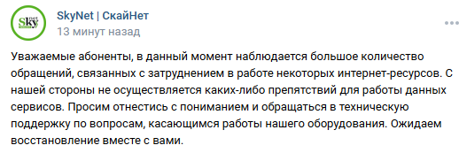
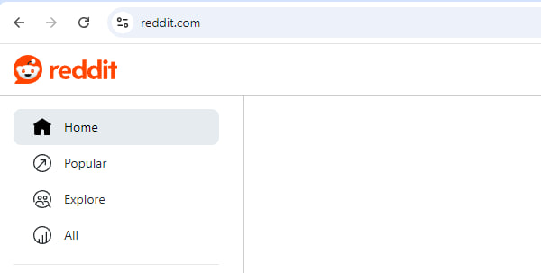
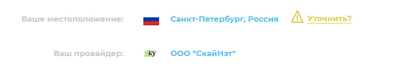

С 0:00 домены wikipedia.org reddit.com imgur.com додопицца альфабанк гитхаб на провайдере Skynet перестали работать без ВПН. Вероятно намертво блок по IP так как гудбай/запрет не помогают
В целом много чего лежит, не только википедия.
Провайдер скайнет? И какие именно домены лежат?
Э нет, хехе, у Скайнета легло пол-интернета. Ровно с 00:00 по Москве.
Навскидку:
реддит.ком
имгур.ком
*.википедия.орг
додопицца.ру
веб.альфабанк.ру
И наверняка еще очень многое другое. (кстати, как сделать, чтобы форум не генерировал принудительно превьюшки ссылок, когда я их пишу латиницей?)
В их группе вк под последним постом отписываются возмущенные люди, у которых отвалились разные игровые сервисы, Скайнет пока что ответил кому-то стандартной отпиской, что “у нас все норм, ничего не знаем”.
кстати, один там конкретный впн - тоже “лег”, но дело не в самом протоколе, а в том, что клиент не может подключиться к айпишникам серверов
Да, Скайнет
Дальше вкалдки перезагружать впадлу
Пол-интернета на скайнете легко. Частично решается отключением проверок сертификатов у OCSP-серверов. Через ВПН всё работает без проблем. В группе ВК там уже льются потоки говн.
Итак я понимаю тот самый момент наступил? Приход вайтлиста? И что же мы будем делать? Тут кто не будь разбирается в локалках, CjDNS?
Не думаю. У меня даже сайты банков российских не открываются и ВК с мыловарней через раз. Видимо они тупо что-то сломали, как обычно.
Самое забавное, что у меня даже комп перестал видеть роутер. Я уж думал сетевуха померла. Что это за прикол такой яхз.
Хмммм ERR_TIMED_OUT у сбербанка) Действительно дегенераты из скайнета что то намудрили в настройках ТСПУ по видимому. Хотя я все же так и буду настаивать что это тестировка вайтлиста. Помню как в начале 1 августа в 0:00 вроде обычный гудбай перестал нормально спуфить домены ютуба. А потом такие блокировки “перенеслись” на других провайдеров.
Больше всего странно почему выбирают задрищенный питерский скайнет, а не условный ростелеком…
01:18 по Москве, Реддит стал открываться. Всё остальное - нет.
апд: 01:23 - а сейчас Реддит снова не открывается.
Так как раз потому что задрищенский.
дегенераты из скайнета что то намудрили в настройках ТСПУ по видимому
провайдеры вроде вообще особо ничего не могут с ним делать
да ладно им, наверное пытались еще быстрее ускорить ютуб, но в этот раз не получилось 
У кого есть дампы? Я так понимаю блокировка по IP?
Даже сайт 3D Secure для оплаты (практически чего угодно) картой сломался. Красиво.
Я не могу с этих говноедов. “Мы не при делах, оно всё само сломалось. Ничё не знаем, ждем вместе с вами.”


Ну вот и ВСЁ. Тайна была раскрыта. Учитывая что на скайнете всегда первыми тестируют настройки ТСПУ после замедление серверов ютуба, а так же учитывая разговоры из кое кого органа об запрете ЛЮБОЙ деструктивной информации как таковой у нас реализуется Туркменский сценарий с их вайтлистами)
А теперь серьёзно и без шуток - как мы будем все это обходить? Или придется использовать “альтернативный” интернет по локалкам?
У меня нет аккаунта в ВК, но ради интереса кто-нибудь напишите там им в реплаях, что не работают не только условно-“вражеские” Стим, Дискорд, игры и прочее, но также православные Сбербанк, Альфабанк, страница оплаты 3D Secure от Мир, а также бедная Додопицца. 
С момента блокировок ютуба у меня на скайнете он работал бесприкословно и работает до сих пор.
Более того сейчас тоже никаких проблем не заметил.
Чего паникуете?)
Зайдите сейчас со Скайнета на любой домен, упомянутый в теме. Заметите.




{kind=link}
Вот сейчас и у меня.всё (?) открывается. ¯_(ツ)_/¯
А еще 10 минут назад - нет.
Вы думаете, тут по приколу тему создали, и также по приколу десятки комментов в группе Скайнета в ВК?
Скорее интересны догадки на тему теста ТСПУ)
Ну и интересно, почему у меня ютуб работает)
Ооо смотрю “починили”, но я считаю тему не при каких условиях нельзя закрывать. Это очень сильно напоминает 21 августа когда тестировали белые списки и отвалилась телега и ватсап.
Очень и очень жаль что так никто и не сделал дамп что бы понять что это( а я ламер в этом
А есть инфа про эти “белые списки”? Интересно было бы почитать
Прочитай про туркменистан
Вот как раз статьи касаемо этого http://www.compromat.ru/page_44166.htm https://asiaplustj.info/ru/news/centralasia/20230221/sluzhba-kiberbezopasnosti-turkmenistana-prodaet-dostup-k-zablokirovannim-saitam
Кстати, в июне 2024 несколько дней подряд я наблюдал на Скайнете нечастые кратковременные (мб минут по 30) замедления загрузки сайтов до менее чем диалапной скорости, как раз примерно из этого же списка, что и сегодня. Реддит, Имгур, Додопицца там точно были (я не просто так придумал посмотреть сегодня, откроется ли именно Додопицца).
Саппорт Скайнета делал вид, что очень удивлены таким, и даже обещали прислать сотрудника, чтобы он лично посмотрел на то, как у меня медленно это открывается, рекомендовали провериться на вирусы и т.п. (при изложении с самого начала, что при пробросе интернета с телефона этой проблемы нет, а также при подключении эзернет-кабеля в другой девайс проблема видна и на нем). Но это всё решалось “само собой” за считанные полчаса максимум, поэтому до визита сотрудника дело не доходило.
Сложно сказать, испытывали ли это другие абоненты. Это было кратковременными явлениями, а в игры я не играю, так что не знаю, затрагивало ли это тогда пользователей Стима и других сервисов, на которые в основном сегодня жалобы в комментах в ВК.
О, нет! Только не бедная додопицца 
А если серьезно, это какие-то оч странные белые списки, т.к. клаудфлейровские и гугловские адреса не отвалились. Варп работал, ютуб работал. Даже сайт с порнушкой работал (с пакеторезкой, офкос). Зато капитально отвалился сбер, мейл.ру и т.д. 
Отвал произошел ровнёхонько в 00:00. По бритвве Оккама - это не случайнось.
Т.е. никто даже не рассматривает вариант того, что просто где-то что-то из оборудования решило обновиться у них и просто прилегло после неудачного обновления или тупо зависло пока обновлялось и маршрутизация прилегла. Зачем везде сразу РКН приплетать?
В тех. поддержке скайнета сказали, что с их оборудованием проблем нет. Типа “сами ждем”. Значит это ТСПУ. Плюс, проблема была реально какая-то странная.
У меня браузер ругался на ошибку проверки OCSP при попытке зайти на тот же мейл. Отключение проверок в настройках решило проблему. Либо добавление мейла в список пакеторезки - тогда тоже пускало.
Другие сайты, типа реддита или стима, блочились по ip, что было видно через курл.
При этом варп, например, работал без проблем. Ютуб тоже. Ну это, короче, мистика какая-то.
Может, конечно, у них всё “само поломалось”. Не отрицаю и такую возможность.
Верить тех. поддержке любого сервиса - неправильно. Они тебе чего угодно могут наговорить, лишь бы компенсацию не давать
Ждём утром отчёты от РКН, якобы на Скайнет была произведена DDoS-атака, а РКН её героически отбил (тут картинка кота с лампой)
Я на скайнете почти 20 лет. Они ни разу не давали компенсаций, даже когда признавали, что проблема с их стороны. Так что им и отговорки искать нет нужды, им там всем на всех пох.
Ну, и зачем его отключать. Так бы и проспали сбой.
Чел с ником похожим на создателя форума без автаркии и новорег из последних сил защищающий говно провайдера из Питера, у которого все сломалось ровно в полночь. И который даже в группе ВК почти прямым текстом намекнул что это не они.
Это к вопросу как много тут сидит и собирает инфу обратная сторона. Форум становится площадкой для сбора инфы о способах обхода, будьте осторожнее. Белые списки пугают.
Это нормально , и дальше таких персонажей будет еще больше , они с первых же сообщений палятся , не обращать внимания да и всё
ну вообще провайдеры могут напрямую взаимодействовать с цму ссоп, по крайней мере писать запросы либо просить убрать какие-либо адреса из фильтрации. Так что если отвечают “мы ничего не знаем”, то это им просто впадлу.
Когда что-то отваливается, особенно массово, это не обязательно блокировка.
Если какие-то каналы отвалились, может быть частичная потеря коннективности.
Как правило это достаточно быстро исправляют.
Байпас должен быть. Может, он не работал.
Хочу добавить немного данных. У знакомых в Лен. области в те же самые ноль-ноль начались такие же самые проблемы и длились как минимум до трёх утра.
В частности, дополнительно не открывались:
И много чего ещё… Открывались:
- Телеграм
- vk.com
- downdetector.su
- youtube.com
При этом у них стоит zapret, который пробивает почти всё. По скорости (speedtest.selectel.ru) проблем не наблюдалось, однако пинг и джиттер были выше обычных примерно раз в 10 (считая таковыми примерно 3 и 1 мс соответственно).
traceroute зависал на 5+ хопе после доменов подобного вида:
- *.as5405.net
- *.de.retn.net
- Что-то даже на msk-ix.cloudflare.com
Связи со Скайнетом той же утилитой не заметили, но через Петербург много что проходило, в основном через:
- 139.45.238.9
- 178.176.143.68
- 83.169.204.82
- 222-130-236-178.maloco.ru
На мобильном интернете проблемы отсутствовали, хотя десктоп частично ходил через IP того же самого Мегафона. Сейчас отвалившиеся ресурсы открываются.
Потому что когда кто-то врет постоянно, то даже когда он говорит правду никто уже не верит. Что-то там про мальчиков и волков
Так в том то и дело что пока не было РКН, которое может заблочить, но ВРАТЬ что это не они, так и думали что это технические проблемы провайдера.
А теперь не понятно как и что и почему не работает. И к провайдеру уже во многих случаях бесполезно обращаться. Потому что непонятно это отмазка у них очередная, или их проблема или реально РКН.
Ну, если РКН ставит на сетях оборудование, которое делает неизвестно что (вплоть до фильтрации трафика по паттернам вида “если в TLS-соединении N шифронаборов, то дропаем”) и делает это совершенно непублично (отсутствует какой-либо механизм общественного контроля за этими блокировками), то чего ж сокрушаться о том, что в качестве причины любого сбоя теперь рассматривается, в т.ч. РКН?
Сами своими руками себя поставили в такую ситуацию.
Для полного протокола на будущее, допишу в тему: сегодня, 6 января 2025, в районе 19 часов MSK у Скайнета снова всё сломалось по тем же (насколько я могу судить) спискам. Только в этот раз сайты не блокировались наглухо, а еле-еле пытались загрузиться со скоростью раза в 2-3 ниже диалапной. Та же история - с конкретными зарубежными IP, а не только с доменными именами.
Без проблем продолжал работать сайт Скайнета, ВК, и вероятно что-то ещё.
В их группе ВК под последним постом есть комментарии других людей, которые подтверждают, что отвалилось “пол-интернета”, в основном без упоминания конкретных сайтов, но там как минимум был упомянут Твитч.
Прошло через ~1.5 часа или около того, не могу сказать точнее.